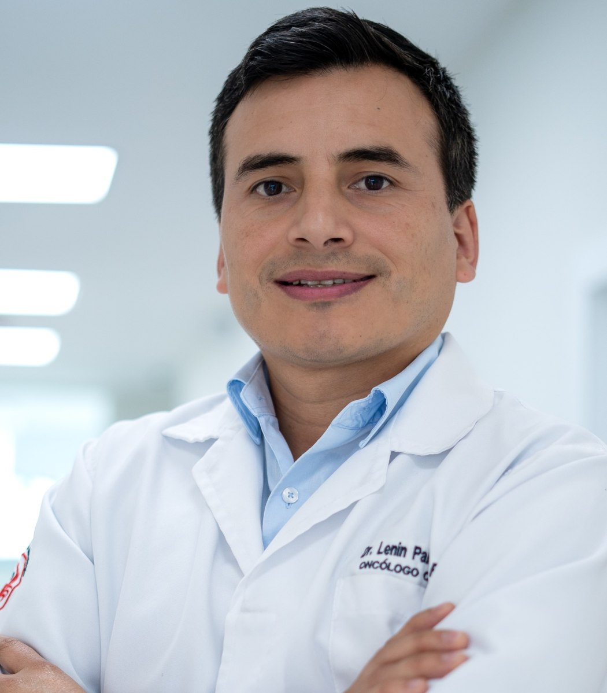
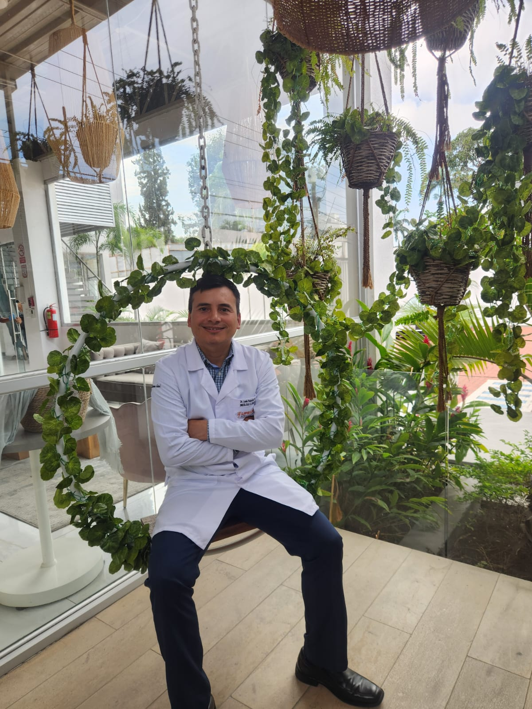

Formación académica
Especialista en Oncología Clínica
Universidad Católica Argentina, Buenos Aires · Hospital Universitario Austral
Doctor en Medicina y Cirugía
Universidad Nacional de Loja
ATENCIÓN ONCOLÓGICA ESPECIALIZADA
Oncólogo Clínico
Atención médica centrada en cada persona, con un enfoque integral para el diagnóstico, tratamiento y seguimiento del cáncer.

ATENCIÓN INTEGRAL Y PERSONALIZADA
Mi compromiso es brindar atención oncológica basada en evidencia científica, con una visión integral del paciente y decisiones compartidas con su familia.
Atención especializada en los principales tipos de cáncer:
Conocer los servicios
CONOCE A TU ESPECIALISTA
Soy el Dr. Lenin Palacios, médico especialista en Oncología Clínica. Mi práctica se enfoca en brindar una evaluación individualizada y opciones de tratamiento basadas en la evidencia científica, acompañando al paciente y su familia durante cada etapa de la atención.
PREPARACIÓN Y ACTUALIZACIÓN CIENTÍFICA
Universidad Católica Argentina, Buenos Aires · Hospital Universitario Austral
Universidad Nacional de Loja
Universidad San Francisco de Quito
Universidad de Lieja, Bélgica · Universidad de Las Américas (UDLA)
Participación continua en congresos nacionales e internacionales de oncología.
Sociedad Ecuatoriana de Oncología Clínica
Sociedad Ecuatoriana de Patología Mamaria
Sociedad de Oncología Torácica del Ecuador
ÁREAS DE ATENCIÓN
Valoración especializada y orientación diagnóstica.
Evaluación de alternativas terapéuticas individualizadas.
Revisión de diagnósticos y planes de manejo.
Control durante y después del tratamiento oncológico.
MEDICINA DE PRECISIÓN
La evaluación genética y molecular puede aportar información valiosa para identificar predisposición hereditaria al cáncer y, en determinados tumores, orientar tratamientos personalizados.
Valoración de antecedentes personales y familiares para determinar cuándo es pertinente el asesoramiento y las pruebas genéticas.
Pruebas moleculares seleccionadas según el tipo de cáncer para apoyar las decisiones terapéuticas.
Los resultados se analizan junto con la historia clínica y, cuando corresponde, con especialistas en genética.
EDUCACIÓN PARA PACIENTES Y FAMILIAS
Información clara sobre algunos tipos de cáncer y recomendaciones para acompañar el cuidado de la salud. Estos contenidos son orientativos y no sustituyen la consulta médica.
El tratamiento depende del estadio y de las características del tumor, como los receptores hormonales y HER2. Puede incluir cirugía, radioterapia, tratamientos sistémicos o su combinación.
Consulta ante cambios persistentes en la mama o el pezón. La edad y frecuencia de los estudios de detección deben individualizarse según los antecedentes y el riesgo.
Existen distintos tipos de cáncer pulmonar. El tratamiento se define por el estadio, el estado general y, cuando corresponde, pruebas moleculares y biomarcadores.
Evitar el tabaco es una medida fundamental. Personas con alto riesgo pueden beneficiarse de programas de detección con tomografía de baja dosis, según criterios médicos.
No todos los tumores prostáticos requieren el mismo manejo. El PSA, la biopsia, las imágenes y la situación clínica orientan opciones como vigilancia, cirugía, radioterapia o tratamientos sistémicos.
La decisión sobre pruebas de detección debe conversarse con el médico, considerando edad, antecedentes familiares y preferencias del paciente.
La colonoscopia puede detectar y permitir retirar lesiones precancerosas. El tratamiento del cáncer establecido depende de la localización y extensión de la enfermedad.
Consulta ante sangre en las heces, anemia sin explicación o cambios persistentes del hábito intestinal. La edad de inicio del tamizaje depende del riesgo individual.
Su abordaje puede combinar endoscopia, estudios de extensión, cirugía y tratamientos sistémicos. Los biomarcadores ayudan a seleccionar terapias en determinados casos.
Los síntomas persistentes, la pérdida involuntaria de peso o el sangrado digestivo requieren valoración. La infección por Helicobacter pylori es un factor de riesgo modificable.
El melanoma es un cáncer de piel que requiere diagnóstico y estadificación adecuados. Según el estadio, pueden utilizarse cirugía, inmunoterapia o tratamientos dirigidos.
Protege tu piel de la radiación ultravioleta y consulta por lunares nuevos o lesiones que cambian de forma, color, tamaño o sangran.
Prioriza una alimentación suficiente, variada y adaptada a los síntomas, con aporte adecuado de proteínas y líquidos. Las necesidades cambian según el tratamiento, el peso y el estado nutricional.
Si hay falta de apetito, pueden ayudar comidas pequeñas y frecuentes. Ante náuseas, dificultad para tragar o pérdida de peso, solicita valoración nutricional. Evita dietas restrictivas y suplementos sin indicación del equipo tratante.
Evitar el tabaco, limitar el alcohol, mantener actividad física adaptada a cada persona, protegerse del sol y seguir las vacunas y controles recomendados contribuye al cuidado de la salud.
Durante un tratamiento oncológico, la fiebre, dificultad respiratoria, sangrado importante o deterioro rápido requieren valoración médica urgente. Consulta al equipo tratante sobre las indicaciones específicas de tu tratamiento.
Contenido educativo general. No reemplaza una evaluación médica individualizada ni constituye una indicación de tratamiento.
ATENCIÓN PRESENCIAL · PREVIA CITA
ATENCIÓN VIRTUAL · PREVIA CITA
Atención especializada a distancia para revisión de resultados, segundas opiniones y seguimiento oncológico, desde cualquier lugar del Ecuador.
Agendar teleconsulta ↗ESTAMOS PARA ORIENTARTE
Agenda tu consulta por WhatsApp. Atención únicamente previa cita en Loja y Guayaquil.
WhatsApp: +593 99 584 7769
Instagram: @leninpalacios.oncologo
Atención previa cita · Loja y Guayaquil
Para proteger tu privacidad, evita enviar historias clínicas o datos médicos sensibles por redes sociales.